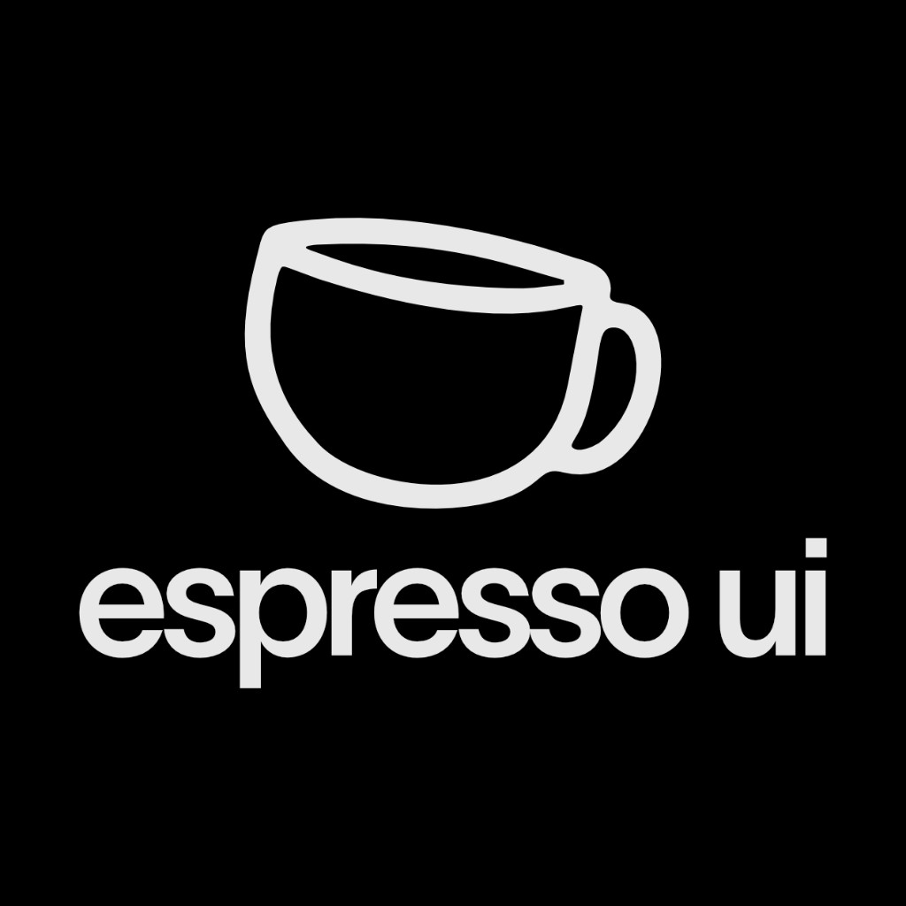
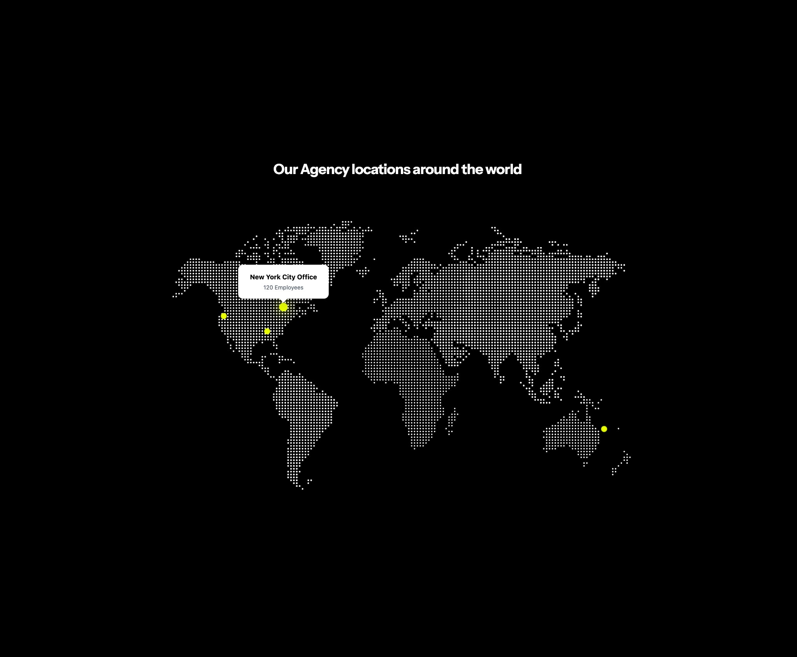
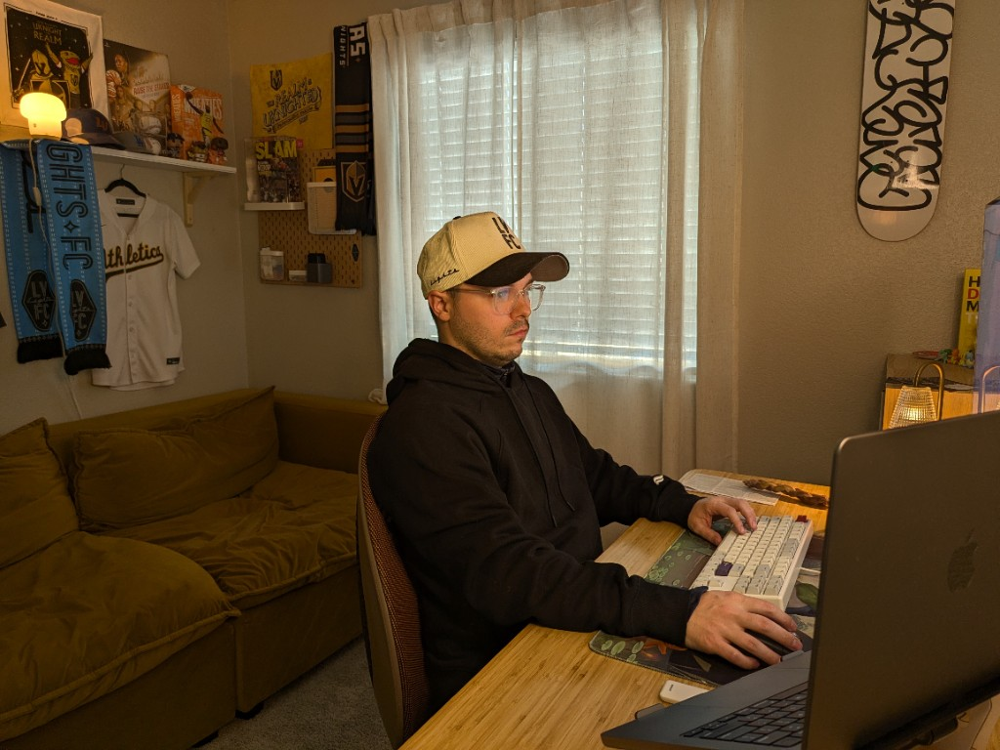
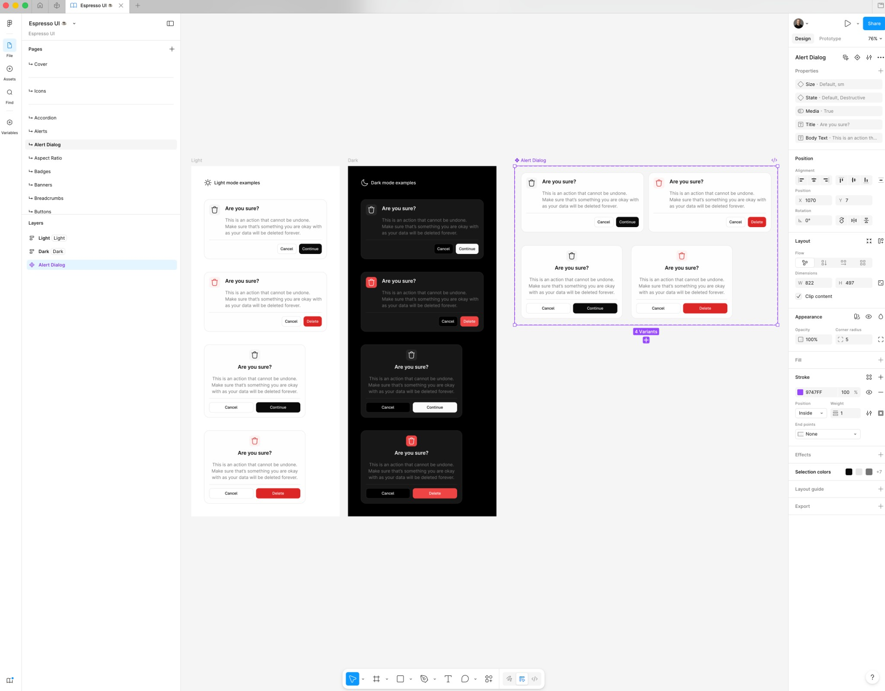

Notes
Thoughts and learnings on design systems, product design, and more.

I'm building a free product. An Agentic Design System called Espresso UI.
Giving back, growing the brand, and shipping a Figma-first system with Claude Code and Figma MCP—alongside students from Design XP.
Apr 6, 2026

I'm starting something new
A Design Systems Studio—0 → 1 systems for startups, from Figma to production-ready agentic design systems with Claude.
Apr 4, 2026

I'm stepping into a new design system role at Lilly
From CVS Health and the Rhythm Design System to Eli Lilly—Super IC and Senior Product Designer on the Lilly Design System.
Apr 2, 2026

I've Stepped into a New Role as a Design Systems Advocate at Work
Bridge for product designers and the design system—still designing screens and UX flows while advocating for the Rhythm Design System.
Feb 12, 2026

I've Built a Figma Plugin that Allows Me to Create Variables in a Second From Top UI Libraries.
Building Colorize It to add color variables from Tailwind, Shadcn, Bootstrap, and more—with one click and automatic dark mode variables.
Feb 12, 2026

Building Figma Make Components for Others
Exploring how to turn Espresso UI components into Figma Make components for the community, plus interactive components like maps for designers to use.
Feb 11, 2026

I Got Better as a Design Systems Designer When I Built Free UI Kit
How building UI kits in my free time made me an expert in Figma and a better teacher for my product design team.
Feb 11, 2026

Building Scalable Design Systems
Exploring the key principles and best practices for creating design systems that can grow with your organization.
Nov 15, 2025